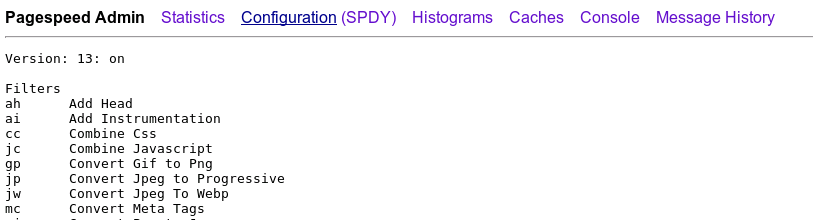

PageSpeed Admin Pages
The admin pages are a collection of features that provide visibility into the operation of the PageSpeed optimizations.
The pagespeed_admin and pagespeed_global_admin pages aggregate a set of pages showing server state so they can be accessed from a single handler. By organizing all these features under a single admin page, this can be done once, and can serve as a launching point for future administration features. Before version 1.9.32.1 the admin pages were read-only, but starting in version 1.9.32.1, cache purging is supported.
The name of the currently active page is underlined in the top navigation bar.
| Page | Related Options | Description |
|---|---|---|
| Statistics |
StatisticsUsePerVHostStatisticsmod_pagespeed_beaconngx_pagespeed_beacon
|
Shows server statistics since startup, such as how many resources are being optimized by filters, as well as various latency and cache effectiveness metrics. |
| Configuration | Configuring FiltersModPagespeedIf (Apache only) |
Shows detailed configuration information including all filters, options, and the current cache flush timestamp. |
| Histograms |
add_instrumentation |
Shows detailed latency data for Page Load Time, rewriting, caches and HTTP fetching. |
| Caches |
MemcachedServers
CreateSharedMemoryMetadataCache
EnableCachePurge
|
Shows detailed cache configuration information. When accessed from the Admin handler, it can be used to inspect the contents of the cache, and provides an interface to purge the cache. |
| Console |
StatisticsStatisticsLoggingLogDir
|
Displays a console of graphs of server optimization behavior over time. |
| Message History |
MessageBufferSize
|
Server-wide history of recent logging output from PageSpeed, including messages that are omitted from the server log file based on its log level. |
Before 1.8.31.2, the main admin page is not available, but there
are page-specific handlers for statistics, messages, and the
console. In 1.8.31.2 and later, the *_pagespeed_* handlers, such
as mod_pagespeed_statistics, will continue to be supported:
- They provide read-only access to server operation. There may be cases where a site owner wants to share statistics or console information but not the ability to purge the cache.
- Existing configurations must continue to work after an upgrade to a release that supports pagespeed_admin.
- The admin pages may later gain support for modifying the server state
Configuring Admin Pages
In this table we use the term "server" for an Apache VirtualHost and an nginx Server Block. We use the term "global" to mean the entire Apache or nginx system, covering all the configured VirtualHost and Server Blocks.
| Apache Handler | Nginx Option | Version | Description |
|---|---|---|---|
pagespeed_admin |
AdminPath |
1.8.31.2+ | Covers all administrative functions for a host in one handler. If you establish this handler, you don't need any of the other server-scoped methods. Only give 'admin' page access to clients that you are comfortable allowing to modify the state of your PageSpeed configuration. |
pagespeed_global_admin |
GlobalAdminPath |
1.8.31.2+ | Covers all administrative functions for
the entire global state in one handler. If you establish this
handler, you don't
need mod_pagespeed_global_statistics. |
mod_pagespeed_statistics |
StatisticsPath (1.8.31.2+) |
All | Launchpad for Statistics, Histograms, and a subset of the Caches page as described above. |
mod_pagespeed_global_statistics |
GlobalStatisticsPath (1.8.31.2+) |
1.1+ | Same as above, but aggregates statistics across all
configured servers. You must enable
UsePerVHostStatistics for separate global
statistics to be retained, otherwise all statistics will be global. |
mod_pagespeed_message |
MessagesPath (1.8.31.2+) |
1.0+ | Displays recent log messages printed by PageSpeed,
including messages that may be below the current server loglevel
threshold such as "Info" messages. Requires that
MessageBufferSize be set. |
pagespeed_console |
ConsolePath (1.8.31.2+) |
1.6+ | Displays a console of graphs of server optimization behavior over time. |
Establishing Handlers in Apache
Each handler is optional; add them individually to enable
admin features. Note that when you add handlers for
pagespeed_admin and pagespeed_global_admin
you are granting read/write access to server-state. The other handlers
are read-only. A sample handler that filters on IP address is
in the default configuration, whose general form is:
<Location /PATH> Order allow,deny Allow from localhost Allow from 127.0.0.1 SetHandler HANDLER_NAME </Location>
You can choose any path for a handler, but you must specify the handler
name exactly as it appears in the table above. By convention we use
use the handler name for the path. You may also want to
employ login-based access to the admin pages, using
AllowOverride AuthConfig. Please see the Apache
2.2
or
2.4
Documentation for details.
Establishing Handlers in Nginx
In nginx, the handlers must be specified as location blocks.
location /ngx_pagespeed_statistics { allow 127.0.0.1; deny all; }
location /ngx_pagespeed_global_statistics { allow 127.0.0.1; deny all; }
location /ngx_pagespeed_message { allow 127.0.0.1; deny all; }
location /pagespeed_console { allow 127.0.0.1; deny all; }
location ~ ^/pagespeed_admin { allow 127.0.0.1; deny all; }
location ~ ^/pagespeed_global_admin { allow 127.0.0.1; deny all; }
Note that these handlers must precede the
"\.pagespeed\.([a-z]\.)?[a-z]{2}\.[^.]{10}\.[^.]+" location block.
In version 1.8.31.2 and later, the above location blocks are needed for each path you elect to enable in PageSpeed options:
pagespeed StatisticsPath /ngx_pagespeed_statistics; pagespeed GlobalStatisticsPath /ngx_pagespeed_global_statistics; pagespeed MessagesPath /ngx_pagespeed_message; pagespeed ConsolePath /pagespeed_console; pagespeed AdminPath /pagespeed_admin; pagespeed GlobalAdminPath /pagespeed_global_admin;
You can choose any path, as long as it's consistent between
the pagespeed Path and the location. By
convention we use the names as specified in the example.
Prior to version 1.8.31.2, the above "Path" settings do not exist,
and the failure to specify location blocks leaves the paths active
with no access restrictions. The module will service requests
to the paths whether the location blocks are specified or not.
This applies to /ngx_pagespeed_statistics,
/ngx_pagespeed_global_statistics,
/ngx_pagespeed_message, and /pagespeed_console.
If you define access control for /pagespeed_admin or
/pagespeed_console, you must do so earlier in the configuration
file than the path to handle .pagespeed resources, to ensure
that the handlers are disambiguated.
Limiting Handler Access
Note: New feature as of 1.10.33.0
Apache's SetHandler access controls are accessible to anyone who can
modify .htaccess files, so in a typical shared hosting context
the global admin site isn't sufficiently protected. As of 1.10.33.0,
PageSpeed allows setting an additional restriction of what domains are allowed
to load handlers. For example, to deny access entirely, you could put:
- Apache:
ModPagespeedStatisticsDomains Disallow * ModPagespeedGlobalStatisticsDomains Disallow * ModPagespeedMessagesDomains Disallow * ModPagespeedConsoleDomains Disallow * ModPagespeedAdminDomains Disallow * ModPagespeedGlobalAdminDomains Disallow *
- Nginx:
pagespeed StatisticsDomains Disallow *; pagespeed GlobalStatisticsDomains Disallow *; pagespeed MessagesDomains Disallow *; pagespeed ConsoleDomains Disallow *; pagespeed AdminDomains Disallow *; pagespeed GlobalAdminDomains Disallow *;
To allow access only to an admin, define a new VHost
like admin.example.com, use standard web-server access control
(IP or password) to restrict access to only that admin, and then at the top
level of your config put:
- Apache:
ModPagespeedStatisticsDomains Allow admin.example.com ModPagespeedGlobalStatisticsDomains Allow admin.example.com ModPagespeedMessagesDomains Allow admin.example.com ModPagespeedConsoleDomains Allow admin.example.com ModPagespeedAdminDomains Allow admin.example.com ModPagespeedGlobalAdminDomains Allow admin.example.com
- Nginx:
pagespeed StatisticsDomains Allow admin.example.com; pagespeed GlobalStatisticsDomains Allow admin.example.com; pagespeed MessagesDomains Allow admin.example.com; pagespeed ConsoleDomains Allow admin.example.com; pagespeed AdminDomains Allow admin.example.com; pagespeed GlobalAdminDomains Allow admin.example.com;
Now when you visit admin.example.com/pagespeed_global_admin
you'll see global (server-level) admin information, but users are not able to
access this under their own domain or turn the handler on
with .htaccess.
For all six of these options the default value is Allow *. If
you explicitly Allow access to any site, all others are
automatically Disallowed. Wildcards are allowed, and additional
directives are applied in sequence. For example, consider the following
config:
- Apache:
ModPagespeedAdminDomains Allow *.example.* ModPagespeedAdminDomains Disallow *.example.org ModPagespeedAdminDomains Allow www.example.org
- Nginx:
pagespeed AdminDomains Allow *.example.*; pagespeed AdminDomains Disallow *.example.org; pagespeed AdminDomains Allow www.example.org;
This would allow access to www.example.com/pagespeed_admin,
and www.example.org/pagespeed_admin but
not shared.example.com/pagespeed_admin.
Shared Memory Statistics
By default PageSpeed collects cross-process statistics. While
they're mostly intended for debugging and evaluation
using /mod_pagespeed_statistics, /ngx_pagespeed_statistics,
and the PageSpeed Console, statistics are also
necessary for limiting concurrent image rewrites
and background fetches.
It's not recommended to turn them off, as their performance impact
is minimal, but if you need to you can do so with:
- Apache:
ModPagespeedStatistics off
- Nginx:
pagespeed Statistics off;
Virtual hosts and statistics
You can choose whether PageSpeed aggregates its statistics
over all virtual hosts (the default), or to keeps separate counts for each. You
can chose the latter by specifying
UsePerVHostStatistics on. In that
case, /pagespeed_admin, /mod_pagespeed_statistics
and /ngx_pagespeed_statistics will show the data for
whatever virtual host is being accessed. If you do turn per-virtual
host statistics on, you can still access the aggregates
under /pagespeed_global_admin, /mod_pagespeed_global_statistics
or /ngx_pagespeed_global_statistics.
- Apache:
ModPagespeedUsePerVhostStatistics on
- Nginx:
pagespeed UsePerVhostStatistics on;
Message Buffer Size
Determines the number of bytes of shared memory to allocate as a circular buffer for holding recent PageSpeed log messages. By default, the size of this buffer is zero, and no messages will be retained.
- Apache:
ModPagespeedMessageBufferSize 100000
- Nginx:
pagespeed MessageBufferSize 100000;